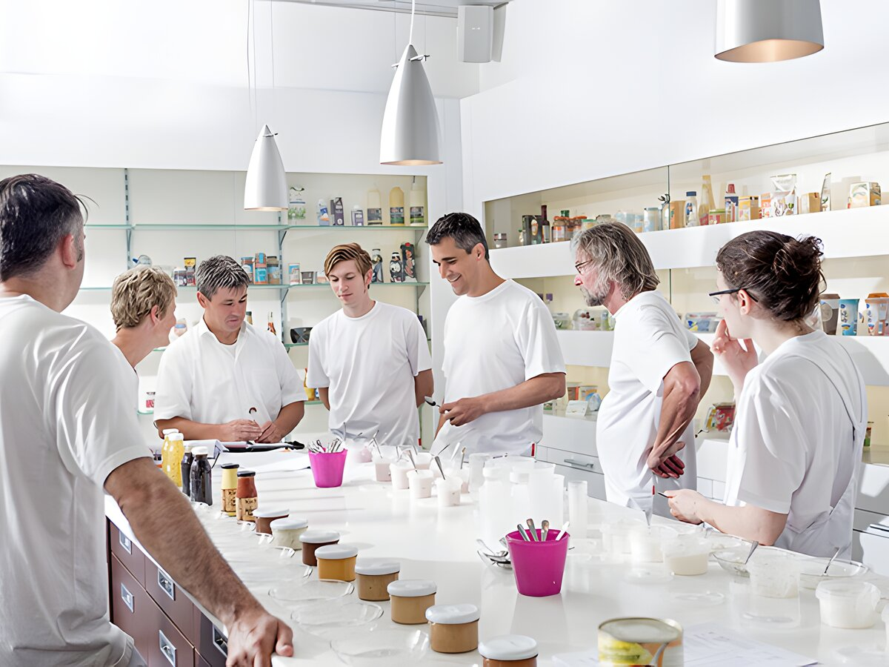
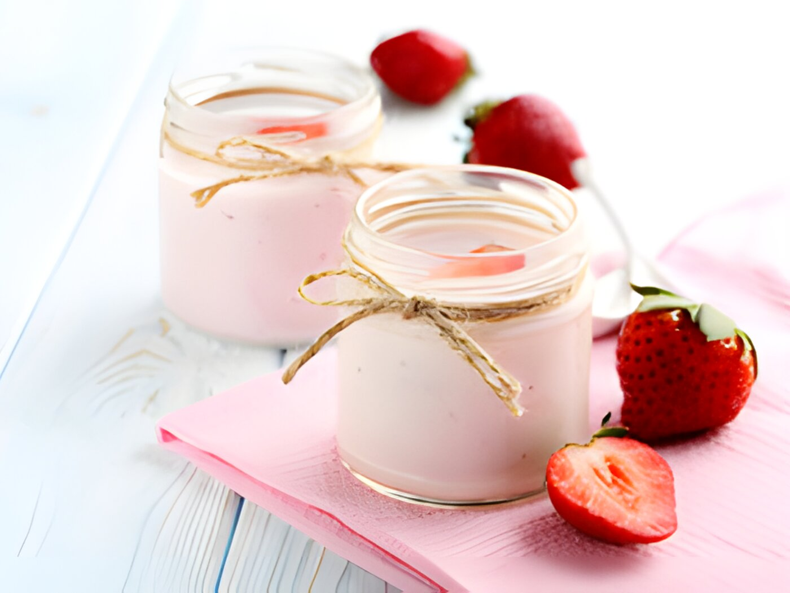
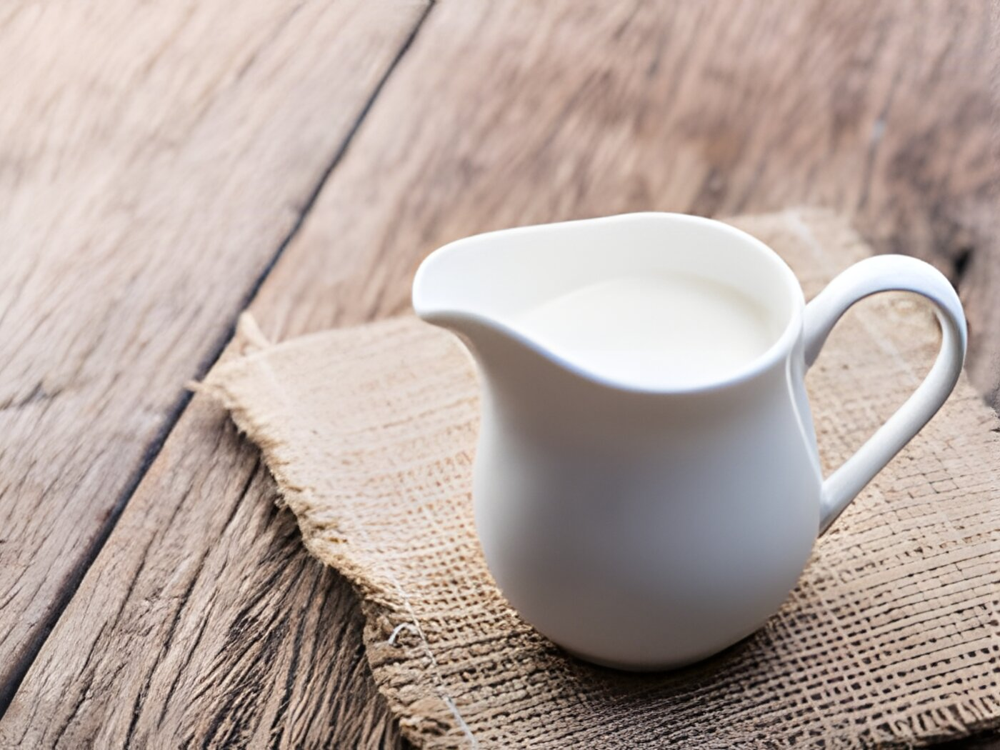
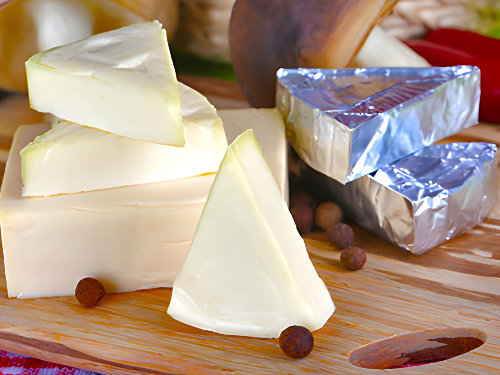
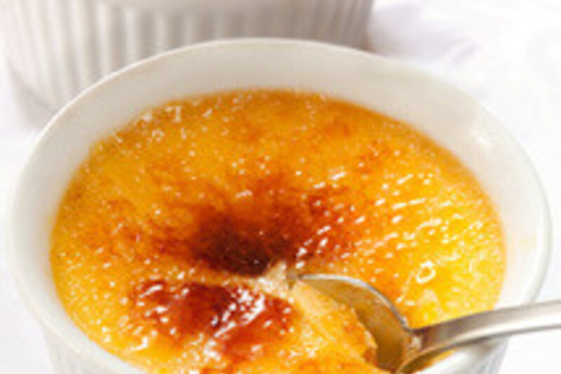
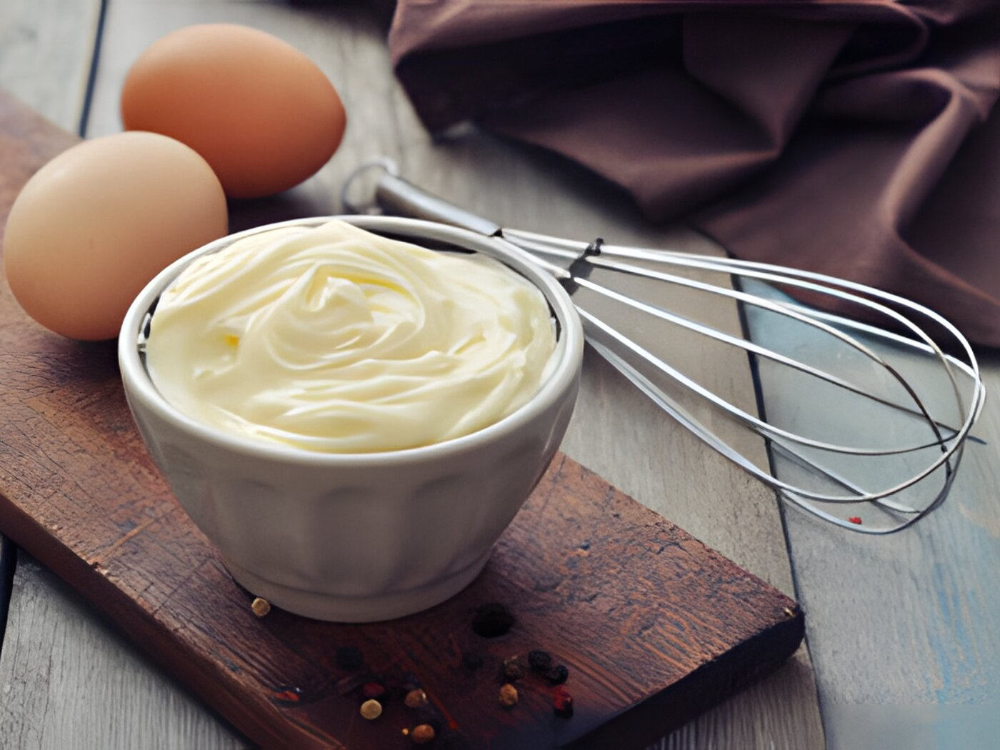
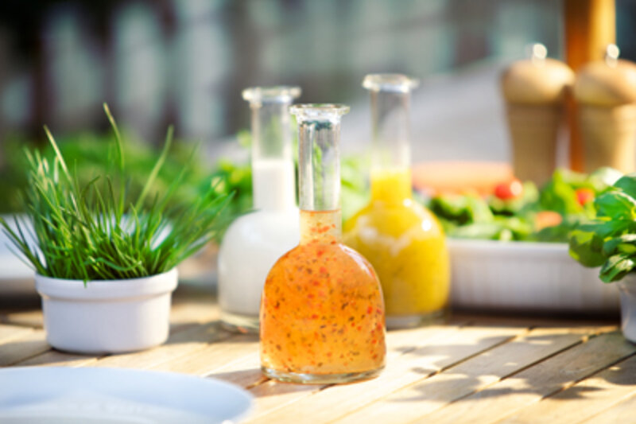
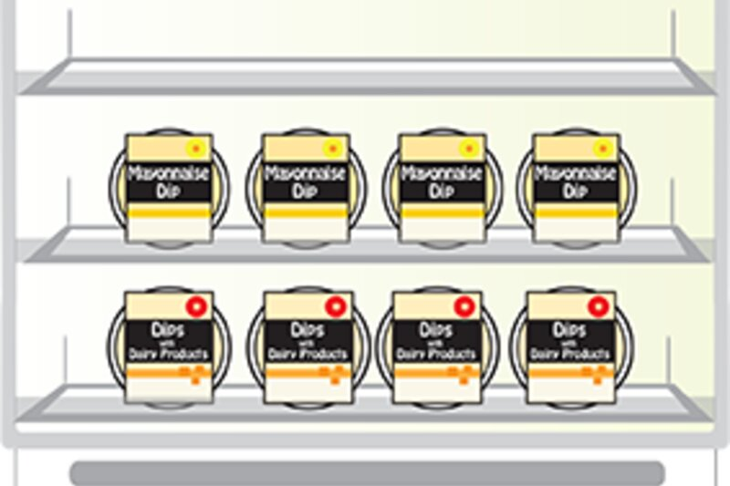
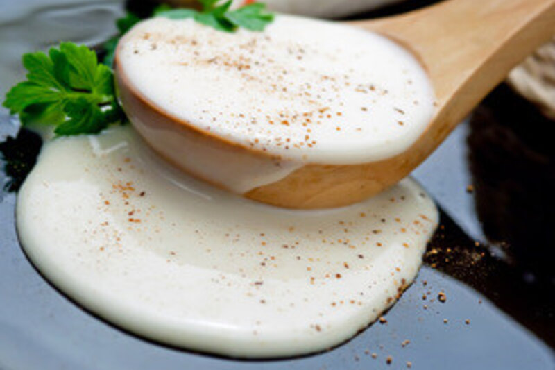
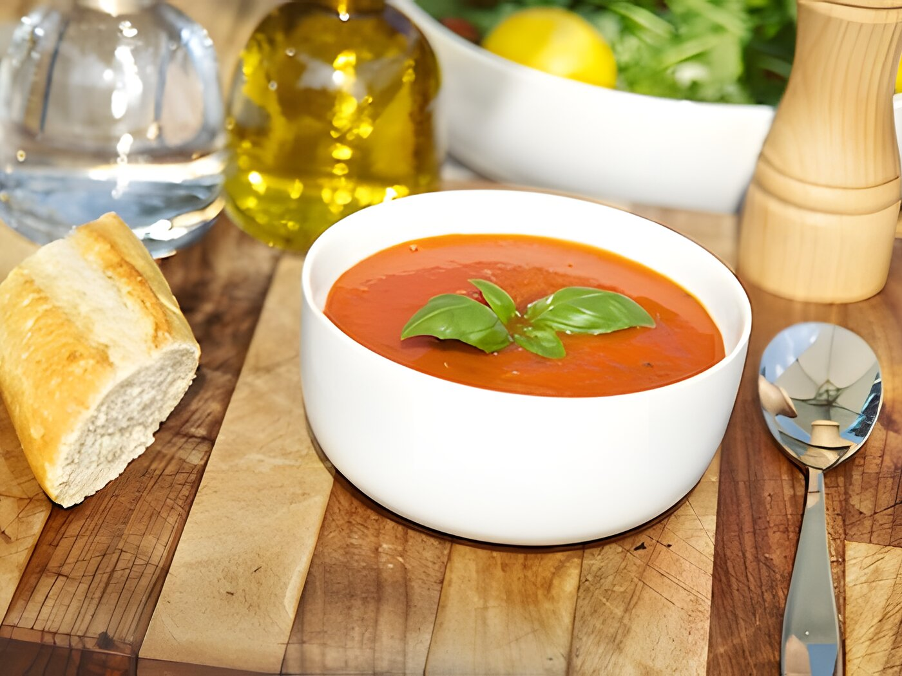

Product areas
Everything we formulate for.
Eleven application areas with more than one hundred product types. Each one is a starting point, never a finished recipe.
Dairy and dairy alternatives
Where texture is the product.
Yogurt, cream, cheese, desserts and milk drinks. The classic core of KaTech, and still the area with the deepest formulation library.

Yogurt
Set, stirred, drinking or Greek style: the mouthfeel consumers expect, at the fat level your costing allows.
View area
Cream
Whipping, cooking, sour and non-dairy. Stability through heat, shear and shelf life.
View area
Cheese
Cream cheese, processed, quarg, analogue. Spreadability and melt behaviour that survive your process.
View area
Desserts
Mousse, custard, jelly, cheesecake. Aeration and set that stay put until the spoon.
View area
Milk drinks
Flavoured, acidified, shakes and dairy alternatives. No sedimentation, no separation, no chalky finish.
View areaPlant-based
Meat and fish alternatives.
The fastest moving category we work in, with a dedicated centre of excellence and its own pilot machinery in Lübeck.

Savoury
Emulsions that hold.
Mayonnaise, dressings, dips, soups and sauces. Cold and hot processes, clean label and egg-free routes included.

Mayonnaise
Full fat, reduced fat, egg free, clean label. Emulsions that do not break on the line.
View area
Dressings
Clear, emulsified or dairy based. Suspension that survives a shelf and a shake.
View area
Dips
Sour cream, yogurt, quarg or mayonnaise based. Body without gumminess.
View area
Soups and sauces
Fresh, pasteurised, sterilised, high fat. Viscosity that behaves the same after every batch.
View area
Soups
Fresh and pasteurised soups with the body they need and the label you want.
View areaBakery and fruit
Fillings, toppings, glazes.
From muffin batter to fruit preparation, including the KaTech Scratch Plus system for clean label and allergen-free baking.
Your category is not listed?
Most of our work starts with a product that does not fit a category. Describe it and we will tell you honestly whether we can help.